<!DOCTYPE html>
<html lang="pt-BR">

<head>
  <meta charset="UTF-8">
  <meta name="viewport" content="width=device-width, initial-scale=1.0">
  <title>Comunidade Vida Nova</title>
  <link rel="preconnect" href="https://fonts.gstatic.com">
  <link
    href="https://fonts.googleapis.com/css2?family=Montserrat:wght@900&family=Open+Sans:ital,wght@0,400;0,700;1,400&display=swap"
    rel="stylesheet">
  <link rel="stylesheet" href="assets/css/variables.css">
  <link rel="stylesheet" href="assets/css/elements.css">
  <link rel="stylesheet" href="assets/css/classes.css">
  <link rel="stylesheet" href="assets/css/menu.css">
  <link rel="stylesheet" href="assets/css/styles.css">
  <link rel="icon" type="image/png" href="assets/img/logo_fundo.png">
</head>

<body>

  <input id="close-menu" class="close-menu" type="checkbox" aria-label="Close menu" role="button">
  <label class="close-menu-label" for="close-menu" title="close menu"></label>
  <aside class="menu white-bg">
    <div class="main-content menu-content">
      <h1 onclick="getElementById('close-menu').checked = false;">
        <div class="logo">
          <a href="#home"></a>
        </div>
      </h1>
      

      <nav>
        <ul onclick="getElementById('close-menu').checked = false;">
          <li><a href="#home">Inicio</a></li>
          <li><a href="#intro">Pastores</a></li>
          <li><a href="#grid-one">Movimentos</a></li>
          <li><a href="#gallery">Midias</a></li>
          <li><a href="#grid-two">Instituto</a></li>
          <li><a href="#pricing">Contribuições</a></li>
          <li><a href="#contact">Contato</a></li>
        </ul>
      </nav>

      
        
      
    </nav>
  </aside>

  <div class="menu-spacing"></div>

  <section id="home" class="intro main-bg section">
    <div class="main-content ">
      <div class="intro-text-content">
        
        <h2>Quem Somos</h2>
        
        <p>A Comunidade Vida Nova nasceu em dezembro de 2001, em São Paulo, no bairro de Interlagos na casa dos pastores Celso e Vera Lúcia Guidelli.
        Por mais de vinte anos, foram membros de uma igreja denominacional na região sul de São Paulo. Em 1997, o Senhor começou a incomodá-los sobre
        a necessidade de uma nova visão de ministério. Mas foi em 2000 que ocorreu o desligamento espiritual da igreja onde cresceram. 
        Cerca de um ano depois, começaram, de forma simples e modesta, a Comunidade Vida Nova, com exatamente nove vidas.</p>
        <p>
          Com seis meses de trabalho, e já com aproximadamente vinte e cinco vidas na comunidade, percebeu-se que seria necessário conseguir um local 
          para os cultos, pois o espaço da sala de estar dos pastores já não era suficiente. Foi dado um grande passo de fé e ousadia, e, dois meses 
          após a assinatura do contrato de locação, foi inaugurada a primeira sede da Comunidade Vida Nova.
        </p>
        <p>
          Depois de trinta meses, estavam diante de um novo desafio: era preciso conseguir um lugar ainda maior. 
          A igreja havia crescido – já tinha em torno de sessenta vidas na comunidade. Era preciso dar seguimento à visão e aos sonhos do Senhor.
        </p>
        <p>Em setembro de 2004, um novo imóvel foi alugado, com capacidade para 150 pessoas. Durante três anos neste local o crescimento foi inevitável, 
          e em 2007 foi decidido que a Comunidade Vida Nova deveria procurar outro imóvel, que fosse bem maior e com maior estrutura. Foi alugado no bairro 
          da Vila Marcelo região de Parelheiros, com aproximadamente oito mil metros quadrados de espaço, com dois galpões. Desde então, a Comunidade tem vivido 
          grandes conquistas de Deus neste lugar.
        </p>
        <p>Comunidade Vida Nova <br>
          Somos uma Grande Família de Cristo
        </p>

        <br>

        <h3>Nossa Missão</h3>

        <p>Cumprir a grande comissão de Jesus dada à Sua igreja (Mateus 28:19 - 20), contando para isto com a participação ativa de cada membro comprometido com esta igreja (Efésios 4:16).</p>
       
      </div>
      <!-- <div class="intro-img">
        
      </div> -->
    </div>
  </section>

  <section id="intro" class="white-bg section">
    <div class="main-content top3-content">
      <h2>Pastores</h2>
      <p>Cremos que todo crente em Cristo deve estar sujeito à autoridade de Deus expressa na igreja local onde Deus o tem plantado,
      através dos pastores e ministros ali estabelecidos, para sua proteção espiritual e frutificação.</p>

      <h4>Presbitério</h4>
      
      <br>

      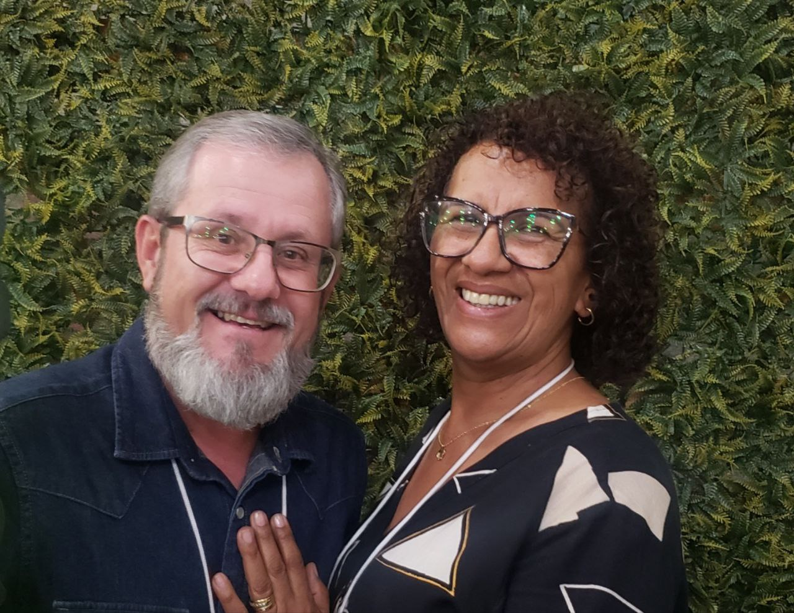
      <p>Celso e Vera Guidelli</p>

      <h4>Pastores Líderes</h4>
      <br>

      <div class="grid">
        <article>
          <h4>Luis e Leila Costa</h4>
          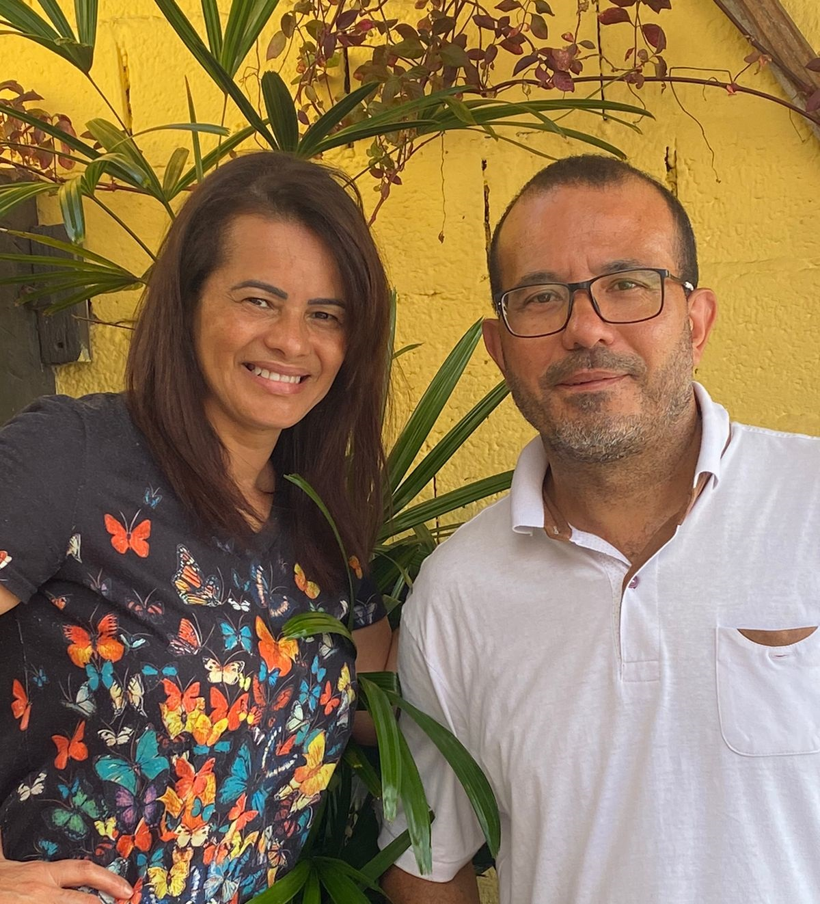
        </article>
        <article>
          <h4>Emerson e Edna Oliveira</h4>
          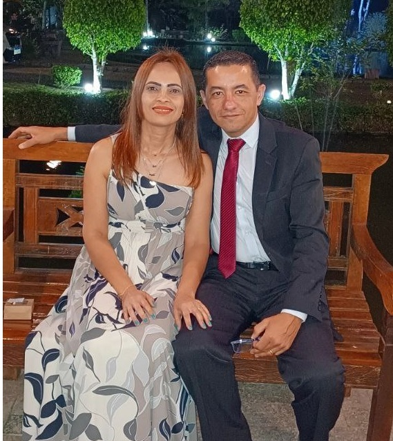
        </article>
        <article>
          <h4>Willian e Sandra Guidelli</h4>
          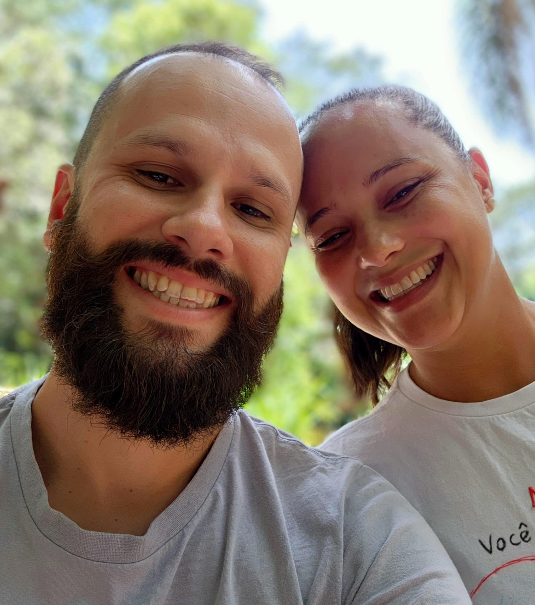
        </article>
      </div>
      <br>
      <br>
      
      <h4>Pastores de Área</h4>
      <br>
      <div class="grid">
        <article>
          <h4>Wesley e Thairine Reis</h4>
          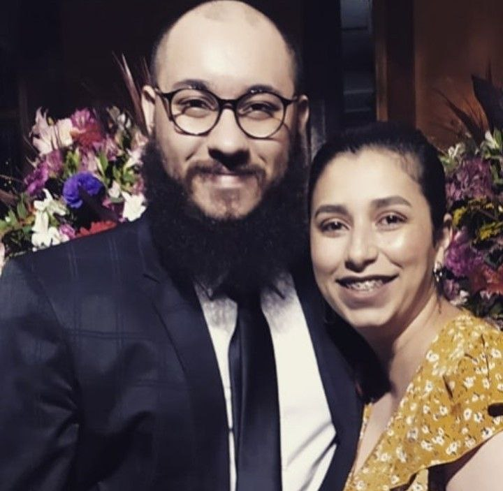
        </article>
        <article>
          <h4>Valmir e Jacqueline Guidelli</h4>
          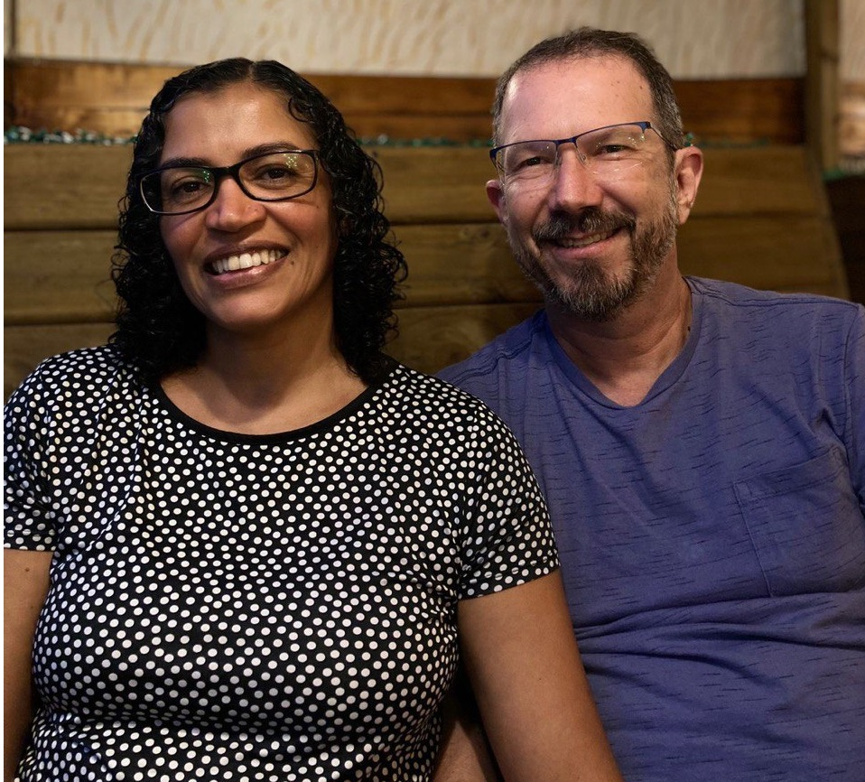
        </article>
        
      </div>
  

    </div>
  </section>


  <!-- <section id="grid-one" class="grid-one main-bg section"> -->
  <section id="grid-one" class="grid-one main-bg section">
    <div class="main-content grid-one-content">
      <h2 class="grid-main-heading">MOVIMENTOS</h2>
      <br>

      <div class="grid">
        <article>
          <h3><a href="celebracoes.html#celebracao">Celebrações</a></h3>

          <p>
            Além das Reuniões de Celebração aos domingos com toda a igreja, nossas Redes encontram-se regularmente para louvar e receber o ensino de acordo sua própria linguagem e necessidade. 
            Confira em nossa agenda a data e horários.
            <a href="celebracoes.html#celebracao">veja mais...</a>
            
            
            </p>
        </article>


        <article>
          <h3><a href="celebracoes.html#integracao">Integração</a></h3>
          <p>Se você deseja fazer parte desta casa, a Integração é a nossa porta de entrada.
            A Integração é um curso ministrado, que expõe a nossa visão e propósito, ou seja, você aprenderá a base daquilo que somos e acreditamos como Igreja
            As classes acontecerão de acordo a logística das áreas pastorais, utilizando-se de material produzido pela Comunidade Vida Nova
            Se você tem participado de nossos cultos (celebrações maiores), células (reuniões menores) e tem mais de 14 anos de idade e deseja se tornar membro dessa Casa. 
            <a href="celebracoes.html#integracao">veja mais...</a>
            </p>
        </article>

        <article>
          <h3><a href="celebracoes.html#celulas">Células</a></h3>
          <p>Somos uma Igreja em células 
          Células são pequenos grupos de pessoas identificadas com a igreja local, que se reúnem semanalmente nas casas para compartilhar experiências, conhecer mais a Jesus através do estudo da Bíblia e ter comunhão. 
          Toda Célula é composta por um líder, anfitrião e membros, e tem como objetivo alcançar novas vidas e se multiplicar. 
          <a href="celebracoes.html#celulas">veja mais...</a></p>
        </article>

        <article>
          <h3><a href="celebracoes.html#ministerios">Ministérios</a></h3>
          <p>Entendemos que os ministérios dentro da Comunidade Vida Nova são fundamentais para o a estabilidade e propósito principal da nossa Visão e Missão.
            <a href="celebracoes.html#ministerios">veja mais...</a>
          </p>
        </article>

        <article>
          <h3><a href="celebracoes.html#instituto">Instituto</a></h3>
          <p>O Instituto Família Vida Nova Brasil uma extensão da Comunidade Vida Nova,  e existe para servir a comunidade local. 
          Nosso objetivo é fomentar recursos para viabilizar projetos e mudar histórias, não com caridade, mas com ensino, com educação, profissionalização e crescimento.
          <a href="celebracoes.html#instituto">veja mais...</a></p>
        </article>
      </div>
    </div>
  </section>

  <section id="gallery" class="grid-one white-bg section">
    <div class="main-content grid-one-content">
      <h2 class="grid-main-heading">Midia</h2>
      <br>

      <div class="grid">
        <div class="gallery-img">
          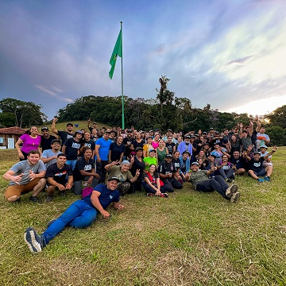
        </div>
        <div class="gallery-img">
          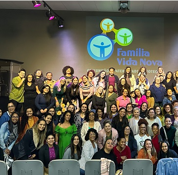
        </div>
        <div class="gallery-img">
          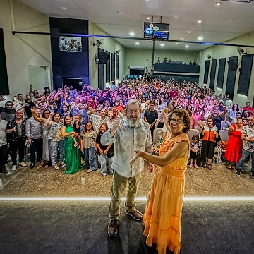
        </div>
        <div class="gallery-img">
          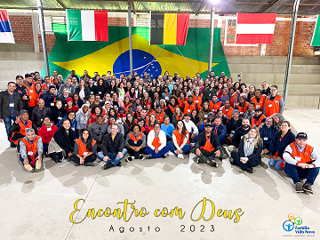
        </div>
        <div class="gallery-img">
          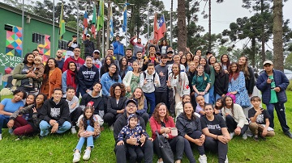
        </div>
        
      </div>
    </div>
  </section>


  <section id="grid-two" class="grid-one main-bg section">
    <div class="main-content ">
      <div class="intro-text-content">
      <h2 class="grid-main-heading">Instituto</h2>
      
        
        <h2>Escrevendo e reescrevendo histórias.</h2>


        
        <br>
        <p>Diante das inúmeras necessidades e carências observadas em nossa região, como igreja, compreendemos nossa responsabilidade em fazer algo mais. 
        Não podemos ser apenas espectadores diante das situações, antes, é nosso dever, como cidadãos, sermos agentes de transformação. </p>
          
        <p>O Instituto Família Vida Nova Brasil uma extensão da Comunidade Vida Nova,  e existe para servir a comunidade local. Nosso objetivo é fomentar 
        recursos para viabilizar projetos e mudar histórias, não com caridade, mas com ensino, com educação, profissionalização e crescimento.</p>

        <p>Acesse o site <a href="www.institutofamiliavidanova.org">www.institutofamiliavidanova.org</a> ou, pelo botão INSTITUTO, na página inicial.</p>
        <p>Esperamos por você lá. </p>

      </div>
    </div>
  </section>

  <section id="pricing" class="white-bg section">
    <div class="main-content top3-content">
      <h2>Contribuicoes</h2>
      
      <div class="grid">
        
        <article>
          <table>
            <thead>
              <tr>
                <th>MP COMUNIDADE VIDA NOVA</th>
                <th></th>
              </tr>
            </thead>
  
            <tbody>
              <tr>
                <td>CNPJ:</td>
                <td>20.344.450/0001-09</td>
              </tr>
            </tbody>
          </table>
        </article>


        <article>
          <table>
            <thead>
              <tr>
                <th>VIA PIX</th>
                <th></th>
              </tr>
            </thead>
  
            <tbody>
              <tr>
                <td>CHAVE CNPJ:</td>
                <td>20.344.450/0001-09</td>
              </tr>
            </tbody>
          </table>
        </article>

       </div>
       <br>
        <div class="grid">
        <article>
          <table>
            <thead>
              <tr>
                <th>TRANSFERENCIA BANCARIA</th>
                <th></th>
                <th></th>
                <th></th>
              </tr>

              <tr>
                <th></th>
                <th>Banco</th>
                <th>Agencia</th>
                <th>Conta Corrente</th>
              </tr>
            </thead>
  
            <tbody>
              
              <tr>
                <td>BANCO BRADESCO S.A</td>
                <td>237</td>
                <td>6545-5</td>
                <td>6247-2</td>
              </tr>
              <tr>
                <td>BANCO PAGSEGURO INTERNET INST PAGAMENTOS S.A. </td>
                <td>290</td>
                <td>0001</td>
                <td>07089254-2</td>
              </tr>
              
            </tbody>
          </table>
        </article>

    </div>


    <br>
    <h5>VIA QR CODE</h5>
    
    <p>Leia o QR Code através do aplicativo de seu banco e efetue a transferência</p>

    
    <p>Siga-nos nas redes sociais</p>
      <div class="back-to-top">
        <a  href="https://www.instagram.com/familiavidanovabrasil/"></a>
        <a href="https://www.facebook.com/familiavidanovabrasil"></a>
        <a href="https://www.youtube.com/@familiavidanovabrasil" ></a>
        <a href="https://wa.me/55XXXXXXXXXXX" ></a>
      
    </div> 
  </section>

 


  <footer id="footer" class="footer white-bg">
    
    <p><a rel="nofollow" target="_blank" href="https://www.linkedin.com/in/evairbd/">Feito por Evair Bernardino</a></p>
  </footer>
 
  
  
   
</body>

</html>